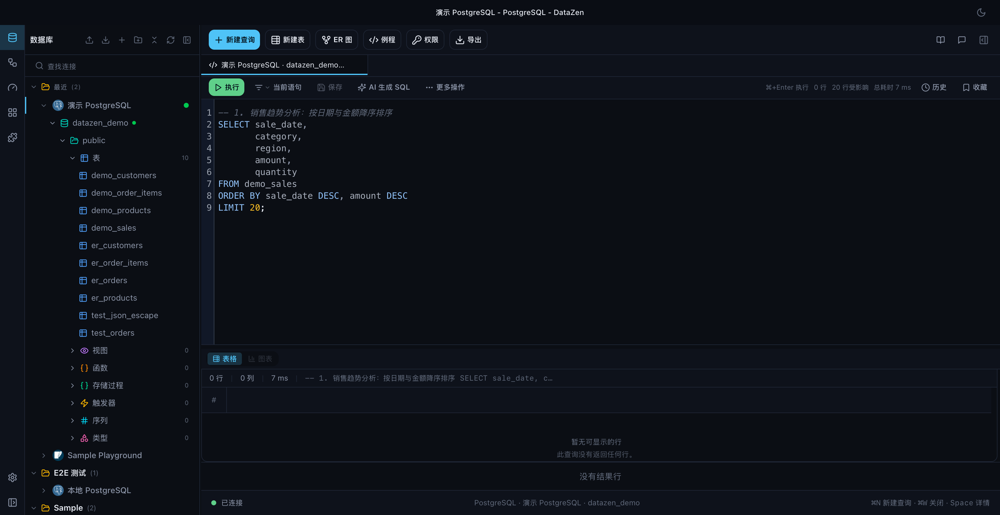
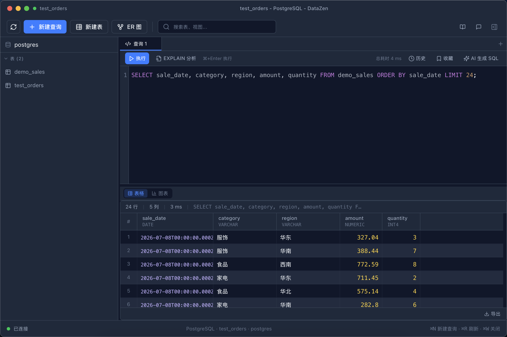
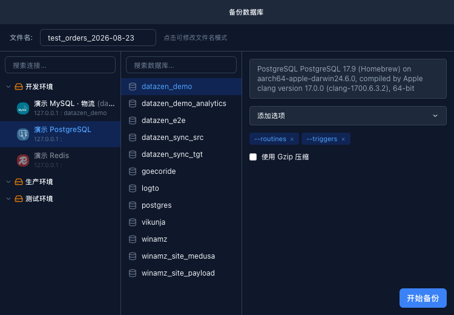
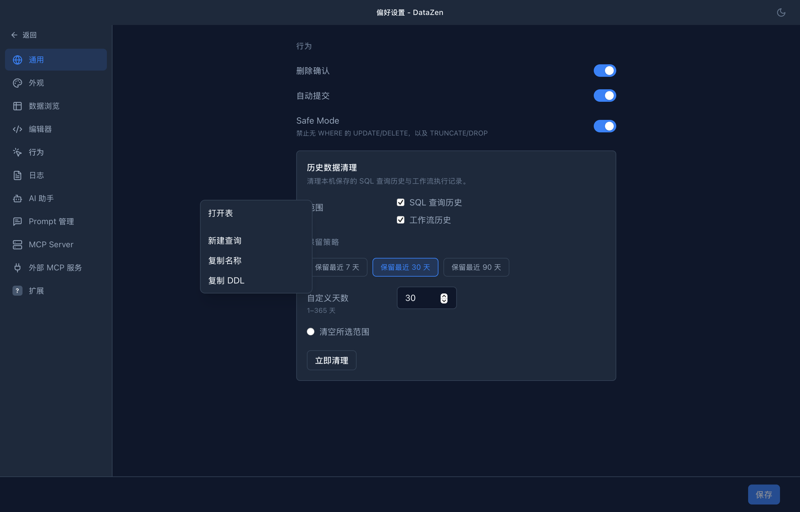

The full capability map of DataZen — from the AI assistant and MCP server to the SQL editor, data tools, and plugins.
NL2SQL, diagnosis, EXPLAIN, Chat, smart filters
Smart recommendations, five chart types, PNG/SVG export
Cross-database orchestration, AI-powered, reusable flows
Plug your databases into Claude, Cursor and other AI agents
PG / MySQL / SQLite / Redis / plugins
DataZen includes a built-in MCP (Model Context Protocol) server. Point Claude Desktop, Cursor or any MCP-compatible agent at it, and they can inspect schemas, run queries, read EXPLAIN plans — even trigger whole workflows.
--mcp-stdio on servers, scripts
or CI — no UI required
Claude / Cursor / AI Agent
│ natural language
▼
MCP protocol
│ tools · resources · prompts
▼
DataZen (local)
│ queries · schema · EXPLAIN · workflows
▼
PostgreSQL · MySQL · SQLite · Redis …Setup guide: MCP server & client in the README




| Capability | Description |
|---|---|
| Virtual scrolling | Smooth at 100K+ rows |
| Export / Import | CSV, JSON, SQL interchange |
| Backup | SQL dump (Schema / Data / Gzip) |
| Data sync | PG ↔ MySQL schema compare + data sync + resume |
| ER diagram | Auto-generates table relationship graph |
| Redis view | Key browser: String / Hash / List / Set / ZSet / Stream |